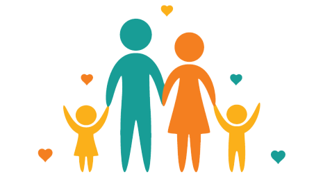

CRIANZA
Artículos sobre cómo establecer límites saludables, fomentar la autoestima y enseñar habilidades sociales. Información sobre las distintas etapas de desarrollo infantil y cómo apoyar el crecimiento de los niños.

CUIDADO PERSONAL
Consejos de cuidado personal que se ajustan al estilo de vida de una madre. Técnicas para manejar el estrés y encontrar momentos de tranquilidad durante el día.
RECURSOS
Consejos para manejar el presupuesto familiar, ahorrar en gastos y planificar para el futuro. Ideas para comidas rápidas, económicas y saludables para toda la familia.